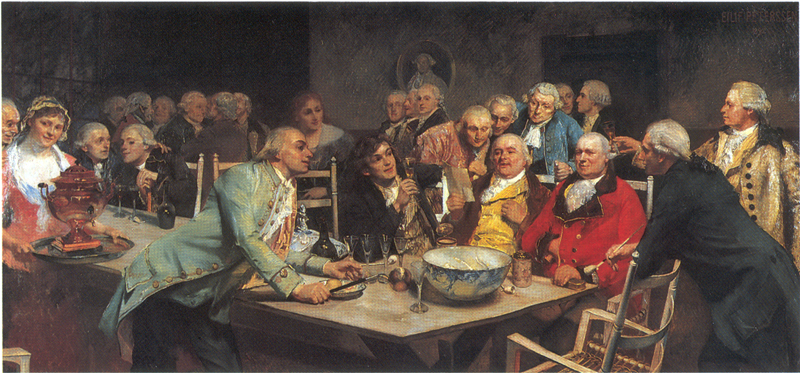

WesselBlogg
Samfundet i sin helhed og særdeleshed

JohanWessel42 har posta eit nytt innlegg til WesselBlogg
Selskab
5 kommentarar til post av JohanWessel42
Ole Meyer:
Dette er verkeleg ein interresant idè! Veit du om ein stad ei slik samling kan haldast?JohanWessel42 til Ole Meyer:
Kva med Juels Kaffehus i Læderstræde? Det skulle vera ein egna stad.Ole Meyer til JohanWessel42:
Hehe, ja det kan bli litt av ein klubb :)